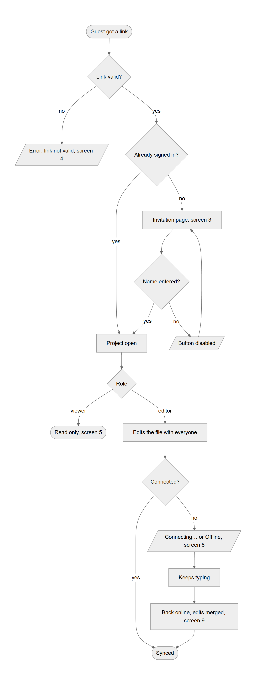
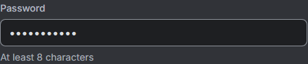
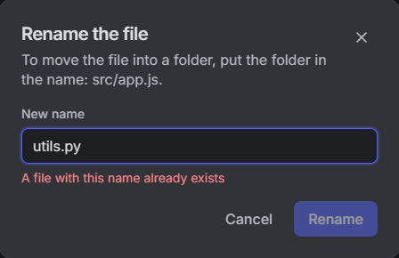

Collab: a platform for editing code together in real time
Author: Artsiom Harminovich
Supervisor: Maksym Svynarenko
Criterion: Refined UX
November 2026
Every screen in this document is a screenshot of the working app. The automated test
e2e/tests/ux-screens.spec.ts takes them on test data, so they can be taken again after any
change to the interface. The screenshots use the dark theme (there is a light one too).
1. Product and users
Collab is a shared workspace for a project in the browser: code files, Markdown documents, a board for
diagrams, a chat and running code. People join a project with one link; a guest needs no account.
User
Goal
What matters to them
Student, project owner
Get a team working on the code quickly
One link instead of invitations in 4–5 services; the project is not lost after the session
Guest (friend, classmate)
Help with the code right now
Nothing to install, no sign-up; start typing in the shared file at once
Mentor or teacher
Look at the code and give advice
See who is editing what; the "viewer" role so nothing gets broken
Interface principles
In within a minute. Link → name → editor. No extra steps for a guest.
Edits are not lost. When the connection drops, work goes on, and the header shows the state.
An error says what to do. The text says what happened and how to fix it, without error codes.
Show the error before sending, when possible. The field shows the problem at once and the button stays disabled.
Security comes before a hint. At sign-in the text does not say which field is wrong, so it does not reveal whether an account exists.
2. Scenario 1. A guest joins by a link and edits a file
User: a guest without an account. Start: got an invite link in a messenger.
Result: the guest edits the file together with everyone, and everyone sees the edits.
Main path
The guest opens the link. The invitation page shows who invites, the project name and the role (screen 3).
Types a name. While the field is empty, the button is disabled.
Presses "Join as guest". The project opens.
The guest types in the file. Others see the text and a cursor with the guest's name; the header says "Synced".
Alternatives and errors
Condition
What the user sees
What next
The link is wrong or the owner replaced it
"Could not join. The invite link is not valid or has expired" (screen 4)
Button "To my projects"; ask for a new link
No name entered
The "Join as guest" button is disabled (screen 3)
Enter a name (up to 100 characters)
The link gives the "viewer" role
"You will be able to view, but not change" (screen 5)
Files open read-only
The person is already signed in
The invitation page is skipped
Added to the project at once
The connection drops while editing
The header says "Connecting…" or "Offline: edits are saved on this device" (screen 8)
Keep typing; when the connection is back the edits merge and the header says "Synced" again (screen 9)

Fig. 1. Scenario 1 with branches and errors
3. Scenario 2. Sign-up, sign-in and a new project
User: a student who will own the project. Start: opened the site for the first time.
Result: a project is created (empty, from an example or from a GitHub repository), and the invite link is sent to the team.
Main path
"Create account": name, email, password. Under the password there is a hint "At least 8 characters".
The list "Your projects" opens. "New project" → name → the project is open.
Project menu → "Invite people": choose a role (editor or viewer) and copy the link.
Alternatives and errors
Condition
What the user sees
What next
The email is already registered
"This email is already registered" (screen 2)
Go to sign-in with the "Sign in" link
The password is shorter than 8 characters
Hint under the field; the browser does not send the form
Enter a longer password
Wrong email or password at sign-in
"Wrong email or password", without saying which one is wrong (screen 1)
Try again or continue as a guest
Project from GitHub: the text is not a repository link
"This does not look like a GitHub repository link. Example: https://github.com/owner/repo" (screen 7)
Fix the link following the example
The repository is private or does not exist
"Repository or branch not found. Private repositories are not supported yet."
Check the address; make the repository public
GitHub does not answer
"Could not reach GitHub. Please try again."
Try again later
The owner wants to close the old link
"Make a new link": the old one stops working at once
Send the new link
Fig. 2. Scenario 2 with branches and errors
4. Scenario 3. Files and running code together
User: an editor of the project. Start: the project is open. Result: the program has
run, and every member sees the same output, status and run time.
Main path
"Create a file" or "Rename": a name with a folder, for example src/app.py.
Writes code together with others.
"Run". The output, status and time appear for everyone who has the file open.
Alternatives and errors
Condition
What the user sees
What next
The file name is taken
Under the field while typing: "A file with this name already exists"; the button is disabled (screen 6)
Choose another name
The name starts or ends with "/" or contains ".."
"The name must not start or end with “/” or contain “..”"
Fix the name
The file is neither JavaScript nor Python
"Only JavaScript and Python files can run"
Run a file with code
Public server with an access code
An "Access code" window; if it is wrong, "Wrong access code"
Enter the code; the server owner gives it
The runner is not available
"Running code is not available right now. Please try a bit later."
Try later; editing files still works
Too many runs at once
"Too many programs are running right now. Please try again in a minute."
Try again in a minute
The program runs longer than 10 s
Status "time limit (10 s)", the program is stopped
Look for an endless loop
An error in the program
Status "error", the line with the error is highlighted, the message is shown first
Go to the line and fix it
Fig. 3. Scenario 3 with branches and errors
5. Visual style
The style is calm and dense, like work messengers: the dark theme by default, the light one through a
switch in the profile menu. All colours are tokens (CSS variables in apps/web/src/index.css,
names in tailwind.config.js), so both themes use the same names.
Colours
Token
Dark theme
Light theme
Used for
canvas
30 31 34
227 229 232
App background
surface
43 45 49
242 243 245
Panels, cards, dialogs
main
49 51 56
255 255 255
Editor area
fg / muted
Main and secondary text
accent
88 101 242 (the same in both themes)
Main buttons, links, focus
ok
45 199 112
21 105 58
Success, "online"
bad
252 135 139
176 28 28
Errors and delete warnings
warn
240 178 50
140 72 6
The "owner" role, "Connecting…"
Text colours have a contrast of at least 4.5 : 1 against their background (WCAG 2.1 AA), which is why
the error colour is darker in the light theme than in the dark one.
Fonts, sizes, shapes
What
Value
Interface font
Inter Variable; code in JetBrains Mono Variable (both are bundled with the app and do not depend on the system)
Text sizes
16 px for what people read; 14 px for what goes with it (hints, captions); 12 px for labels. Headings 20 and 24 px
Corner radius
8 px for buttons and fields, 12 px for dialogs and cards
Shadows
card for cards, pop for dialogs and menus
Icons
Lucide, outline, 14–24 px, always with a label or an aria-label
Animation
Short: appearing 0.18 s, dialog 0.2 s. Only to show where something came from
Screen width
From 360 to 1920 px; on a phone the panels open over the editor
6. Component library
The components are in apps/web/src/components/ui and components/layout.
Below are the states that matter for errors and validation, and screenshots of the real components.
Component
Purpose
Variants and states
Button
All actions
primary (one main action per screen), secondary, ghost, danger (delete); sizes sm/md/lg; disabled; "in progress" with another text ("Signing in…", "Creating…")
Field
Input with a label
label above the field; hint under it; error hint in red; focus with an accent-coloured border
ErrorNote
Form error from the server
red box above the fields, role="alert", so a screen reader reads it at once
Modal
Dialogs
title, description, "Close" button, closes with Esc; focus stays inside the dialog
ErrorScreen
A page could not open
icon, a clear reason, one way out (screen 4)
Sync status
File header
"Synced", "Connecting…", "Offline: edits are saved on this device"; role="status"
RoleBadge
Member role
owner, editor, viewer: colour and icon
Avatar
Member
initials on the person's colour; their cursor has the same colour
Segmented, Spinner, Logo
Switches, waiting, logo
—
FileTree, SidePanel, ProjectHeader
Project layout
file buttons appear on hover and focus; chat and members in the side panel
Button primarySync status when the connection dropsErrorNote

Field with a hint

Modal with an error in the field hint and a disabled main button
7. Key screens with errors and validation
Screen 1. Sign-in: "Wrong email or password". The message does not say which field is wrong, so nobody can find out whether the account exists. What was typed stays in the fieldsScreen 2. Sign-up: "This email is already registered". The password rule is visible under the field in advance, not after an errorScreen 3. Invitation: the role is visible before joining; while the name is empty, the main button is disabled. Under the field: why the name is needed and a link to what data is keptScreen 4. The link is not valid: the reason in simple words and one clear way outScreen 5. A view-only link: the person knows in advance that they cannot change filesScreen 6. Rename: the error is visible while typing, the button is disabled, and no request goes to the serverScreen 7. Import from GitHub: an error with an example of a correct link; under the field, which links work and which files are skippedScreen 8. The connection dropped: the header says "Connecting…", and the user keeps typingScreen 9. The connection is back: "Synced"; the edits made offline are there and the others see them
8. Rules for error texts
Say what happened and what to do next: "Please try again", "Example: …".
No codes or technical words: not "404", but "The invite link is not valid or has expired".
Show a field error under that field and while typing, if it can be checked without the server.
Show a server error in one box above the form (role="alert"), and do not clear what was typed.
If an action is not possible right now, the button is disabled and the reason is visible next to it.
At sign-in, do not say what exactly is wrong: this protects accounts.